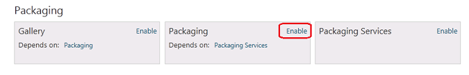

After developing a module extension to Orchard, you probably want to share it with others. Orchard provides a module packaging feature that can be used to create a package file containing your module. To enable this feature, visit the "Features" section of the Orchard admin panel and enable the "Orchard.Packaging" feature.

Alternatively, you can enable the Orchard.Packaging feature from the Orchard command-line. To do this, run bin\orchard.exe from the root of your Orchard installation, or the root of the Orchard.Web project if you are running against a source enlistment.
orchard> feature enable Orchard.Packaging
When the Orchard.Packaging feature is enabled, the Orchard command-line tool supports additional commands that can be used to create a package (.nupkg file) from any module in your Orchard installation, and to install a new module from a packaged .nupkg file.
package create <extensionName> <path>
Create a package for the extension <extensionName>
(an extension being a module or a theme).
The package will be output at the <path> specified.
The default filename is Orchard.[Module|Theme].<extensionName>.<extensionVersion>.nupkg.
For example, "package create SampleModule c:\temp" will create the package
"c:\temp\Orchard.Module.SampleModule.1.0.0.nupkg".
package install <packageId> <location> /Version:<version>
Install a module or a theme from a package file.
package uninstall <packageId>
Uninstall a module or a theme.
The <packageId> should take the format Orchard.[Module|Theme].<extensionName>.
For example, "package uninstall Orchard.Module.SampleModule" will uninstall the Module under the "~/Modules/SampleModule" directory and
"package uninstall Orchard.Theme.SampleTheme" will uninstall the Theme under the "~/Themes/SampleTheme" directory.
user create /UserName:<username> /Password:<password> /Email:<email>
Creates a new User
By running the "package create" command, you can create a zip file of a module.
orchard> package create Lucene C:\Temp
Package "C:\Temp\Orchard.Module.Lucene.1.0.0.nupkg" successfully created
Orchard uses the NuGet packaging format to create module packages (basically .zip files with extra metadata information about your package). NuGet is based on the OPC packaging format, which you can learn more about at http://en.wikipedia.org/wiki/Open_Packaging_Conventions.
Once you've created a module package, you can share it easily with others. Orchard provides the ability to browse and install a module from the "Modules" section of the Orchard admin panel. Refer to the Installing and upgrading modules topic for more details.
Additionally, Orchard provides a Gallery feature that can register one or more gallery feeds of module extensions (OData format). Users can easily install modules from any registered feed. A default gallery feed is exposed from this website, at http://packages.orchardproject.net/FeedService.svc. For more information, refer to the Module gallery feeds topic.
You can visit the Gallery admin panel menu to browse and install available modules and themes online. The http://gallery.orchardproject.net/ website provides a browsable front-end for finding and downloading available modules and themes too.
You can easily upload your custom module package to our Galllery website to share it with other Orchard users. Register an account and contribute your module here.